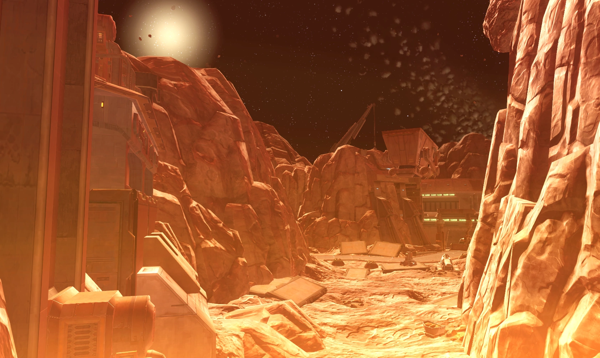
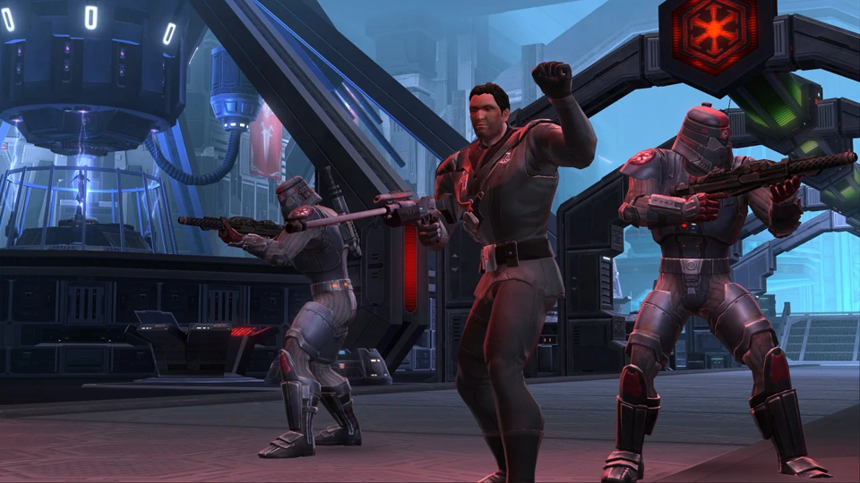

Hammerstation
Die Hammer-Station war eine große Station, die Asteroiden auf Ziele abfeuern konnte. Sie sollte ursprünglich der Galaktischen Republik als Superwaffe dienen, wurde dann aber später stillgelegt. Allerdings entdeckte die aufsteigende Advozsec-Hegemonie das Projekt und benutzte es zur Expansion. Als sie aber dem Sith-Imperium in die Quere kam, entsandte dieses einen Stoßtrupp, mit der endgültigen Vernichtung der Hammer-Station als Ziel.
Die Fabrik
Die Fabrik ist ein imperialer Flashpoint aus der Missionsreihe "Mobilmachung". Ziel ist es das Gefängnis zu infiltrieren und den Gefangen zu befreien und zu vernichten.

Asteroiden in der Galaxis
Letztes Update 10.07.2021
Mahlstrom-Gefängnis
Das Mahlstrom-Gefängnis ist ein Republikanischer Flashpoint der im Anschluss zum Flashpoint "Taral V" beginnt. Er befindet sich auf einer Raumstation in der Nähe eines unbekannten Sterns. Ziel ist es einen unbekannten Jedi zu befreien damit dieser helfen kann den Krieg gegen das Imperium zu beennden.

Mek-Sha
In einer Rebellion der Arbeiter unter Führung der Huttenbrecherin, die sich so ihren Namen aneignete, wurde Mek-Sha den Hutten entrissen und war fortan unabhängig. Auch ohne die Herrschaft der Hutten wurde auf Mek- Sha weiterhin Treibstoff in Minen abgebaut, was jedoch die Integrität der Station gefährdete. Insgesamt wurde Mek-Sha zu einem Versteck für Piraten, Schmuggler, Sklavenhändler und weitere kriminelle Unterwelt.